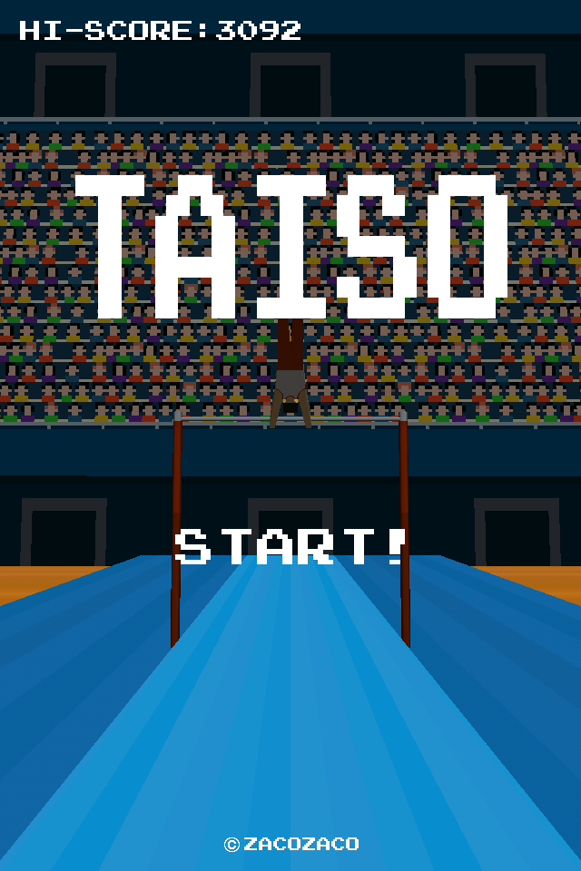
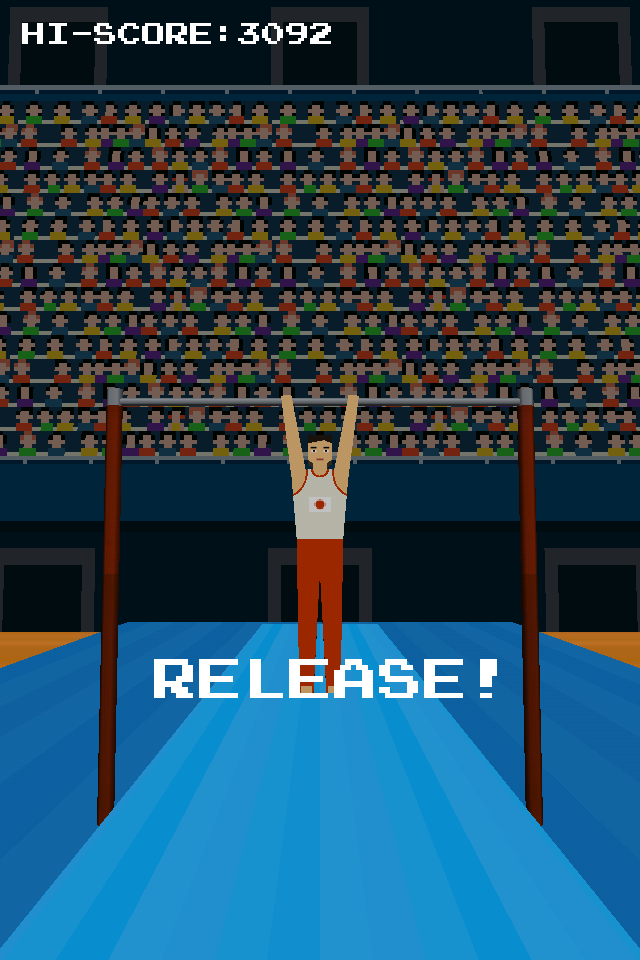
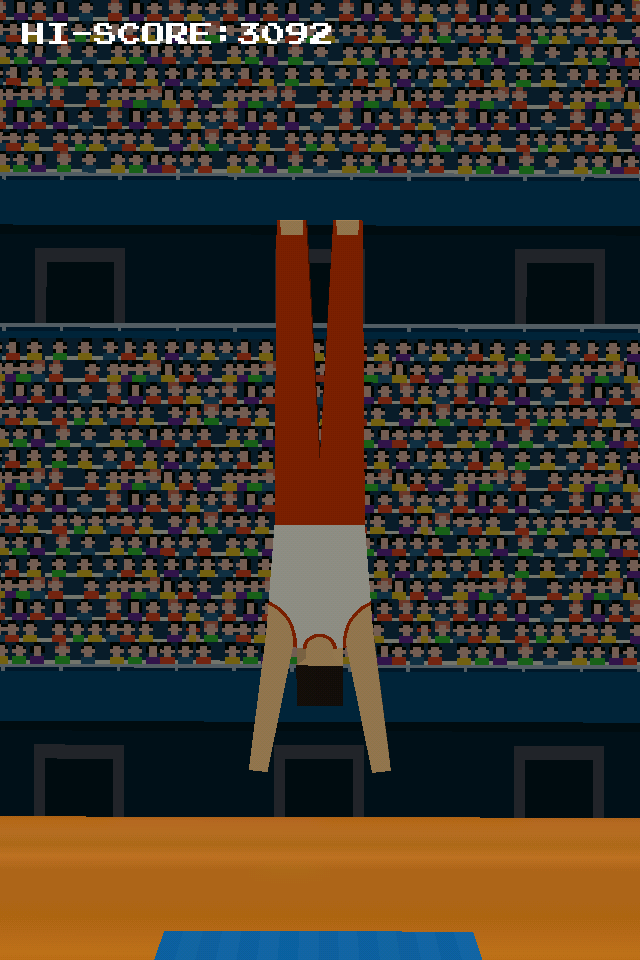
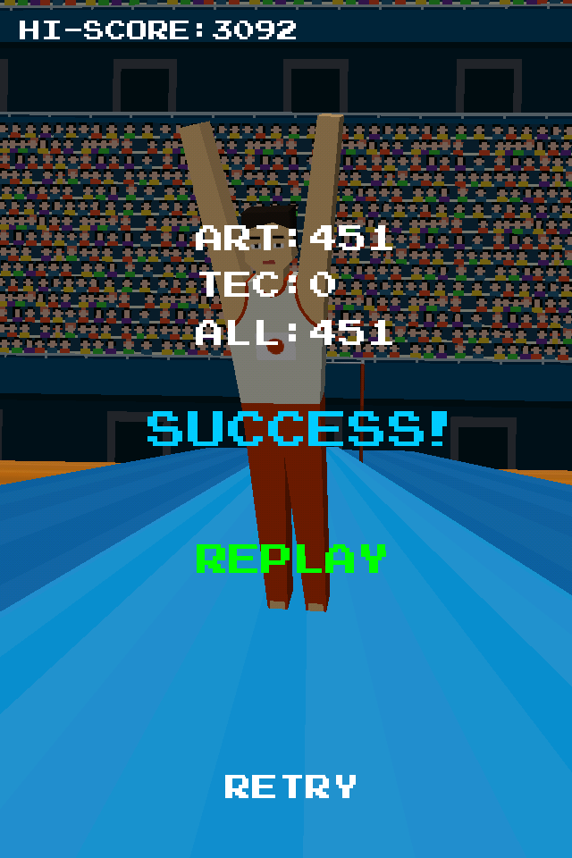
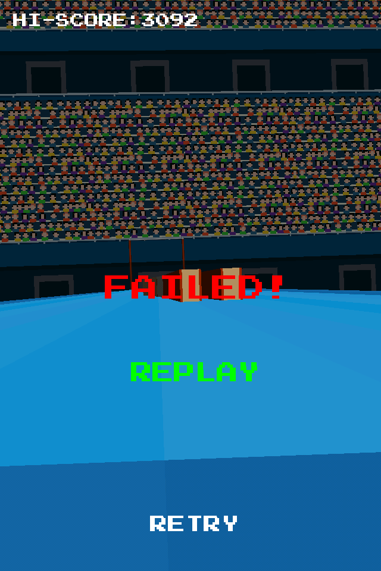
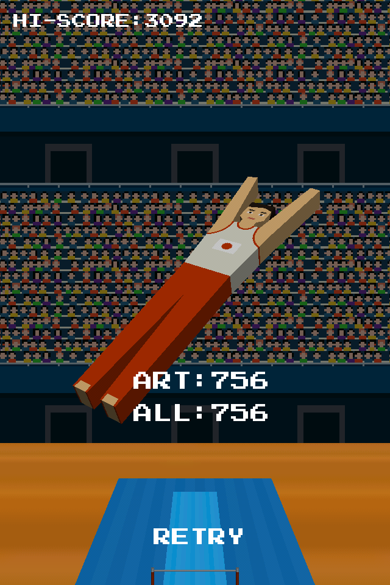

|
TAISOがこの夏、遂にバージョンアップ！ 真骨頂であるローリングスマートフォンの技術を 存分に出し切っていただくために新たな２種目を追加！ |
|||
|
|||
 団体戦での戦いも可能になり、チームでスコアを競い合い 仲間と勝利のお立ち台に立つ事ができます。 |
|||
|
鉛筆回しはもう古い！ いま回すべくはスマートフォン！ |


★遊び方★
iPhone端末をグルグル回すと体操マンも回ります。
上手に着地して下さい。
回せば回すほど、高い芸術点(ART)を獲得できます。
着地までに様々な技(TEC)を繰り出せば、更に高得点を狙えます。
★物語★
これは、体操に命を賭けた漢達の物語。
回る事でしか己の存在を証明できない不器用な漢達。
彼らにとって、生きることとは回ること。
或る者は愛する家族の為に。
或る者は遠い土地で交わした戦友との約束を果たす為に。
或る者は恵まれた体格と才能を持て余し神童と呼ばれた遠き過去を語るだけに落ちぶれ
陰謀により荒廃し無政府状態の混乱が続く故国の復興を願いつつひたむきな努力で徐々に頭角を現してきた若き才能に嫉妬するだけでなく
卑劣な罠による社会的な抹殺を計画しては破棄する酒浸りの日々から脱却する為に
レッツ体操。
ここが生きる舞台だ!!
タイトル画面
リリース画面
プレイ画面
成功画面
失敗画面
リプレイ画面
contact
(C) 2011-2017 ZACOZACO
URL: http://zacotozaco.com/
e-mail: noname@zacotozaco.com